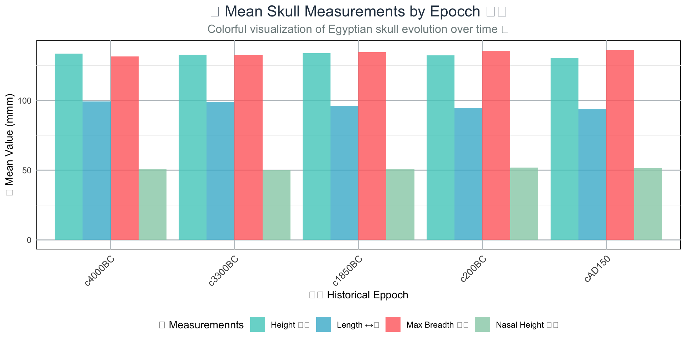
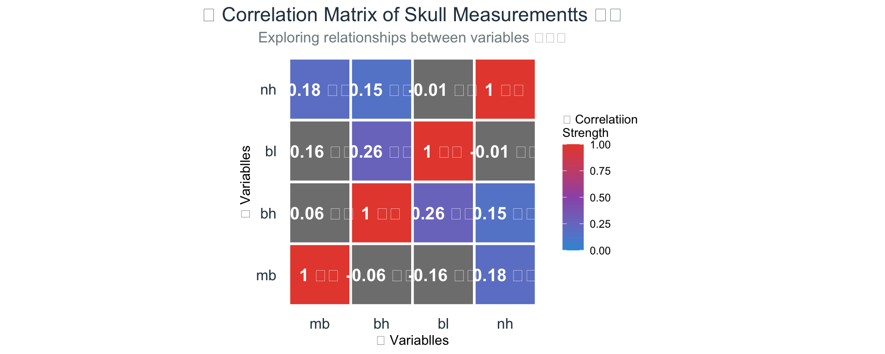

where \(\boldsymbol{\mu}_i = [\mu_{i1}, \mu_{i2}, \ldots, \mu_{ip}]\) is the mean vector for group i
🟠 Alternative Hypothesis (H₁): At least one group’s mean vector differs from the others
\[H_1: \text{Not all } \boldsymbol{\mu}_i \text{ are equal}\]
🗣️ So, Like, What Does That Mean? - H₀: All groups have the same average values across all measured variables 📊 - H₁: At least one group differs from others on at least one variable 🎯
🏺💀 Case Study: Egyptian Skulls Dataset
🔍 Research Question: Do skull measurements differ across historical epochs?
❓ Research Question: Do skull shapes differ across time periods? ⏰
** 🧐 Note: It is always important to know what you are trying to address in your research! 🤓
Data Exploration: Loading and Summary
# Load required librariesif(!require('tidyverse')) {install.packages('tidyverse')library('tidyverse')}if(!require('HSAUR2')) {install.packages('HSAUR2')library('HSAUR2')}# Load the skulls datasetdata("skulls")names(skulls)
[1] "epoch" "mb" "bh" "bl" "nh"
Data Exploration: Summary Statistics
# Basic summarysummary(skulls)
epoch mb bh bl nh
c4000BC:30 Min. :119 Min. :120.0 Min. : 81.00 Min. :44.00
c3300BC:30 1st Qu.:131 1st Qu.:129.0 1st Qu.: 93.00 1st Qu.:49.00
c1850BC:30 Median :134 Median :133.0 Median : 96.00 Median :51.00
c200BC :30 Mean :134 Mean :132.5 Mean : 96.46 Mean :50.93
cAD150 :30 3rd Qu.:137 3rd Qu.:136.0 3rd Qu.:100.00 3rd Qu.:53.00
Max. :148 Max. :145.0 Max. :114.00 Max. :60.00
📊 Visualization
Mean Patterns Across Epochs
# Calculate means by epochmeans_by_epoch <- skulls %>%group_by(epoch) %>%summarise(across(where(is.numeric), mean, na.rm =TRUE))# Reshape for plottingmeans_long <- means_by_epoch %>%pivot_longer(cols =-epoch, names_to ="measurement", values_to ="mean_value")# Create a vibrant, colorful plotggplot(means_long, aes(x = epoch, y = mean_value, fill = measurement)) +geom_bar(stat ="identity", position ="dodge", alpha =0.8) +scale_fill_manual(values =c("mb"="#FF6B6B", "bh"="#4ECDC4", "bl"="#45B7D1", "nh"="#96CEB4"),labels =c("mb"="Max Breadth 🔄", "bh"="Height ⬆️", "bl"="Length ↔️", "nh"="Nasal Height 👃")) +labs(title ="💀 Mean Skull Measurements by Epoch 🏺",subtitle ="Colorful visualization of Egyptian skull evolution over time ⏰",x ="🕰️ Historical Epoch", y ="📏 Mean Value (mm)",fill ="📊 Measurements") +theme_minimal() +theme(axis.text.x =element_text(angle =45, hjust =1, size =10),plot.title =element_text(size =16, hjust =0.5, color ="#2C3E50"),plot.subtitle =element_text(size =12, hjust =0.5, color ="#7F8C8D"),legend.position ="bottom",panel.grid.major =element_line(color ="#BDC3C7"),panel.background =element_rect(fill ="#FFFFFF") )
🔍 Mean Patterns Across Epochs

🔍 Visual Pattern Analysis
👀 What do you observe?
📈 Different measurements show different patterns across epochs
📊 Some measurements appear more variable than others
🎯 Certain epochs might cluster together
💡 This suggests potential group differences - perfect for MANOVA! ✨
🔑 Key Insight: Visual exploration suggests that skull measurements changed over time ⏰, but we need statistical testing to confirm significance! 🧪
🧮 MANOVA Test Statistics
MANOVA uses multiple test statistics (unlike ANOVA’s single F-statistic): 🆚
🔵 Wilks’ Lambda (Λ)
📊 Most commonly reported
📏 Ranges from 0 to 1
⬇️ Smaller values = greater group differences
🟢 Pillai’s Trace
🛡️ Most robust to assumption violations
📏 Ranges from 0 to 1
⬆️ Larger values = greater group differences
🟠 Hotelling-Lawley Trace
💪 Most powerful when assumptions are met
📏 Range: 0 to ∞
⬆️ Larger values = greater group differences
🟣 Roy’s Greatest Root
🎯 Most powerful for detecting differences in one dimension
⚠️ Can be liberal (Type I error)
Running MANOVA in R
# Create MANOVA modelskulls.manova <-manova(cbind(mb, bh, bl, nh) ~as.factor(epoch), data = skulls)# Test with different statisticssummary(skulls.manova, test ="Wilks")
All four skull measurements show significant epoch differences!
This suggests evolutionary or cultural changes in skull morphology over time.
🔥 Advanced Visualization
Correlation Heatmap
# Create correlation matrix for skull measurementsskull_cor <- skulls %>%select(mb, bh, bl, nh) %>%cor()# Convert to long format for ggplotlibrary(reshape2)skull_cor_long <-melt(skull_cor)# Create a stunning, colorful heatmapggplot(skull_cor_long, aes(Var1, Var2, fill = value)) +geom_tile(color ="white", size =1) +geom_text(aes(label =paste0(round(value, 2), ifelse(value >0.6, " 🔥", ifelse(value >0.4, " 😊", " 😐")))), color ="white", size =5, fontface ="bold") +scale_fill_gradient2(low ="#3498DB", high ="#E74C3C", mid ="#9B59B6", midpoint =0.5, limit =c(0,1),name ="🔗 Correlation\nStrength") +labs(title ="🔥 Correlation Matrix of Skull Measurements 💀",subtitle ="Exploring relationships between variables 🔗✨",x ="📊 Variables", y ="📊 Variables") +theme_minimal() +theme(plot.title =element_text(size =16, hjust =0.5, color ="#2C3E50"),plot.subtitle =element_text(size =12, hjust =0.5, color ="#7F8C8D"),axis.text =element_text(size =12, color ="#2C3E50"),legend.title =element_text(size =10),panel.grid =element_blank(),axis.ticks =element_blank() ) +coord_fixed()
🔥 Advanced Visualization Plot

Understanding Variable Relationships
Correlation insights:
Moderate positive correlations between most measurements
Strongest correlation: mb and bl (r = 0.71)
Weakest correlation: bh and nh (r = 0.43)
Why this matters for MANOVA:
Variables are moderately correlated (good for MANOVA)
Not too highly correlated (would suggest redundancy)
MANOVA accounts for these relationships when testing group differences
Pairwise Epoch Comparison
# Compare just two epochs for demonstrationskulls.manova2 <-manova(cbind(mb, bh, bl, nh) ~as.factor(epoch), data = skulls, subset =as.factor(epoch) %in%c("c4000BC", "c200BC"))summary(skulls.manova2, test ="Wilks")
Use when expecting differences in one primary dimension
Can be liberal (more Type I error)
Effect Size in MANOVA
# Calculate eta-squared for overall effectskulls_aov <-summary.aov(skulls.manova)# Extract sums of squares for effect size calculation# This is a simplified approachcat("Effect sizes (eta-squared) for each variable:\n")
Effect sizes (eta-squared) for each variable:
for(i in1:4) { aov_summary <- skulls_aov[[i]] ss_effect <- aov_summary[1, "Sum Sq"] # Sum of squares for epoch ss_total <-sum(aov_summary[, "Sum Sq"]) # Total sum of squares eta_sq <- ss_effect / ss_total var_name <-c("mb", "bh", "bl", "nh")[i]cat(paste(var_name, ": ", round(eta_sq, 3), "\n"))}
mb : 0.141
bh : 0.063
bl : 0.186
nh : 0.04
📊 Interpreting Effect Sizes
🔵 Eta-squared (η²) Guidelines:
📏 Small: η² = 0.01 (1% of variance)
📊 Medium: η² = 0.06 (6% of variance)
📈 Large: η² = 0.14 (14% of variance)
✅ Our Results Show:
All variables have medium to large effects
Epoch explains 10-20% of variance
Substantial evolutionary changes! 🧬
💡 What This Means:
🏺 Historical periods significantly shaped skull morphology
🚨 Remember: Effect size ≠ Statistical significance Both are needed for complete interpretation! 🔍
Real-World Applications
Psychology & Education: - Do teaching methods affect test scores, engagement, and retention simultaneously? - Do therapy types impact anxiety, depression, and quality of life measures?
Marketing & Business: - Do advertisement types influence brand awareness, purchase intent, and customer satisfaction? - Do product features affect usability, aesthetics, and functionality ratings?
Biology & Medicine: - Do species differ across multiple morphological measurements? - Do treatments affect multiple health outcomes simultaneously?
Your Turn: Think of a research question in your field that would benefit from MANOVA!
Common Mistakes to Avoid
❌ Running multiple ANOVAs instead of MANOVA - Inflates Type I error - Ignores variable correlations
❌ Using MANOVA with uncorrelated variables - No advantage over separate ANOVAs - Wastes statistical power
❌ Ignoring assumptions - Can lead to incorrect conclusions - Always check assumptions first
❌ Stopping at significant MANOVA - Need follow-up analyses to understand which groups/variables differ - MANOVA is just the first step!
Your Practice Assignment
skullsDataset_manova.R
Study the complete analysis to understand each step
Test different statistics
Interpret results
Modify visualizations
Try different epoch comparisons
Additional Challenges:
Create new visualizations
Test MANOVA assumptions
Calculate effect sizes
Interpret biological significance
🌟 Summary: Key Takeaways
🛠️ Practical:
✅ Useful when variables are moderately correlated
📋 Check assumptions carefully
👀 Always visualize your data first
📏 Don’t forget effect sizes
🏺 Egyptian Skulls:
🔬 Clear evidence of skull shape evolution
📈 All measurements show epoch differences
💪 Demonstrates power of multivariate approach
💬 Your Own Research
🤔 What Can You Do With MANOVA?
🔬 Think about your own research:
📊 What datasets might benefit from MANOVA?
🎯 What variables would you want to test simultaneously?
👥 What groups would you compare?
🚀 Next Steps:
🔍 Explore and try Manove on your own data!
Additional Resources
R Packages:
HSAUR2: Contains skulls dataset and other examples
car: Advanced MANOVA functions and assumption testing